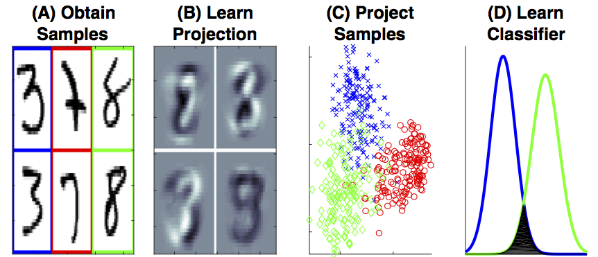
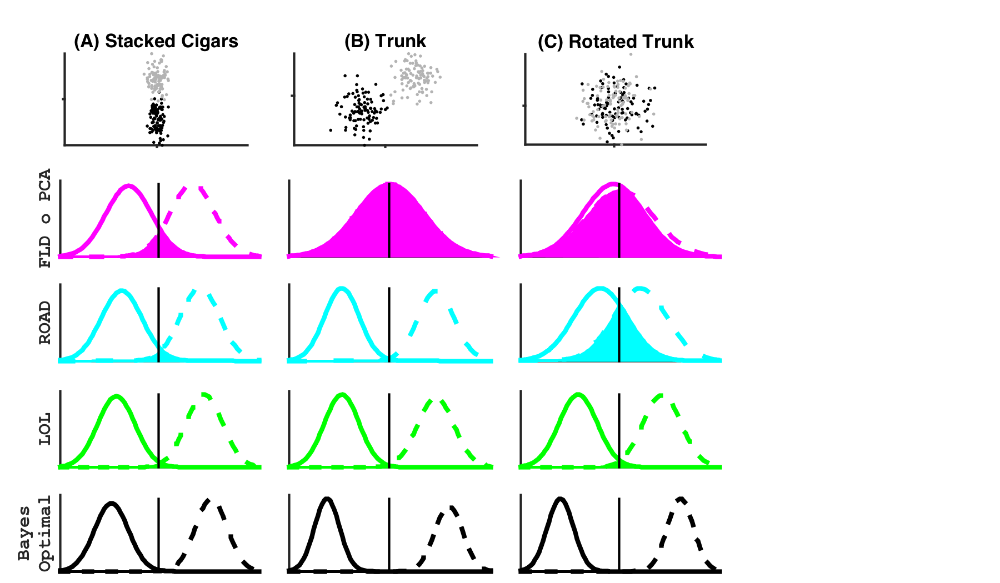
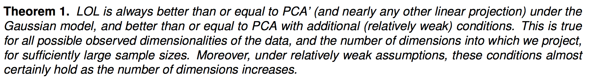
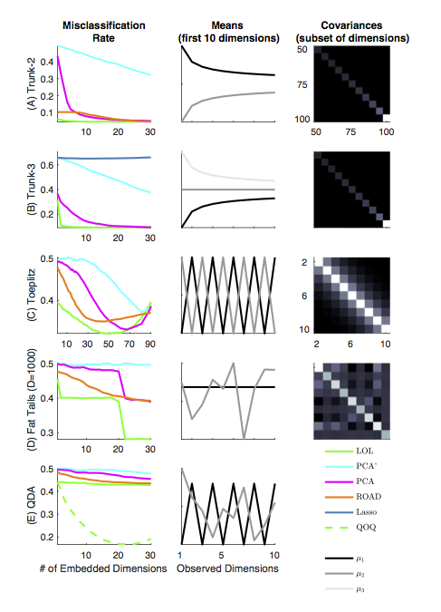
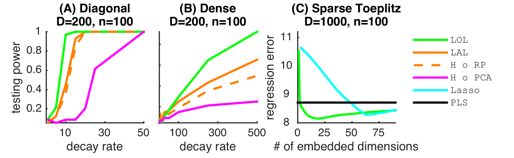

class: center, middle name:opening ### Supervised Manifold Learning Outperforms Principal Components Analysis for Subsequent Inference Joshua T. Vogelstein*, Minh Tang, Da Zheng, Randal Burns, Mauro Maggioni <br> .center[ <br> <!-- JHU Kavli Neuroscience Discovery Institute --> {[bme](http://www.bme.jhu.edu/),[icm](http://icm.jhu.edu/),[cis](http://cis.jhu.edu/),[idies](http://idies.jhu.edu/),[kavli](http://kavlijhu.org/),[cs](http://engineering.jhu.edu/computer-science/), [ams](http://engineering.jhu.edu/ams/), [neuro](http://neuroscience.jhu.edu/)} | [jhu](https://www.jhu.edu/) <br> questions: [jovo@jhu.edu](mailto:jovo at jhu dot edu) <br> slides: <neurodata-papers.github.io/LOL/> <br> Co-Founder: [NeuroData](http://neurodata.io) & [gigantum](http://gigantum.io) ] --- ### Manifold Learning for Subsequent Inference  --- ## Linear Projections - PCA: $(x_i - \hat{\mu})$ - PCA': $(x_i - \hat{\mu}_j)$ - LOL: $[ \hat{\delta} | (x_i - \hat{\mu}_j)]$ - PCA: $$x_i - \mu$$ \begin{align} a=x \end{align} 1. This is an inline integral: `\(\int_a^bf(x)dx\)` 2. More `\(x={a \over b}\)` formulae. Display formula: $$e^{i\pi} + 1 = 0$$ --- ## LOL Gaussian Intuition  --- ## LOL > PCA Theory  --- ## LOL > PCA Simulations  --- ## LOL is fast <img src="../Figs/scalability.png" STYLE="margin:auto; width:100%"/> --- ## LOL > PCA Data <img src="../Figs/plot_real.png" STYLE="position:absolute; LEFT:150px; WIDTH:600px;"/> --- ## LOL Hypothesis Testing & Regression  --- class: center <br> # Questions? ## Hiring Postdocs & Software Engineers Now! e: [jovo@jhu.edu](mailto:jovo@jhu.edu) | w: [neurodata.io](http://neurodata.io), [gigantum.io](http://gigantum.io) <img src="http://brainx.io/images/funding/nsf_fpo.png" STYLE="position:absolute; TOP:550px; LEFT:10px; HEIGHT:100px;"/> <img src="http://brainx.io/images/funding/nih_fpo.png" STYLE="position:absolute; TOP:550px; LEFT:120px; HEIGHT:100px;"/> <img src="http://brainx.io/images/funding/darpa_fpo.png" STYLE="position:absolute; TOP:550px; LEFT:230px; HEIGHT:100px;"/> <img src="http://brainx.io/images/funding/iarpa_fpo.jpg" STYLE="position:absolute; TOP:550px; LEFT:430px; HEIGHT:100px;"/> <img src="http://brainx.io/images/funding/kavli_fpo.png" STYLE="position:absolute; TOP:550px; LEFT:550px; HEIGHT:100px;"/> <img src="http://brainx.io/images/funding/kndi_fpo.png" STYLE="position:absolute; TOP:550px; LEFT:650px; HEIGHT:100px;"/>